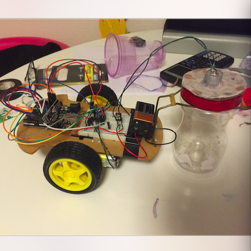

- Video demonstration
- Source code
- Investigated using Arduino UNO R3 for personal learning and interest
- Constructed remote control vacuum cleaner programmed in C++ with standard
car chassis kit and combination of passive/active electronic components
- Controlled vehicle movement and vacuum switch with the nRF24L01 RF
transceiver module implemented on a custom-made controller

- Source code
- Designed console-based text editor in C++ through modular object-oriented practices towards reusability
- Implemented basic functionality including text insertion, deletion, undo, and redo through polymorphism
- Adopted the use of stack data structure to facilitate undo and redo operations
- Video demonstration
- Source code
- Created Karnaugh map minimizer app for iOS devices using Swift 2.0 to simplify boolean algebra expressions
- Reduced dynamically created Karnaugh maps of up to six variables and presented results graphically in tables
- Implemented with the Quine-McCluskey algorithm and Petrick's method

- Source code
- Built a 2-player Othello game and GUI using Python and the Tkinter module
- Supported various game settings and preferences, including board resizability and grid dimensions
- Source code
- Utilized MapQuest's open data API to provide driving directions
- Parses data as JSON object and displays trip information among multiple locations from start to destination
- Offers step-by-step directions and trip stats (distance, estimated time, etc.)
- Developed console-based Connect Four game client with network support in Python
- Implemented network communications following custom networking protocol specification